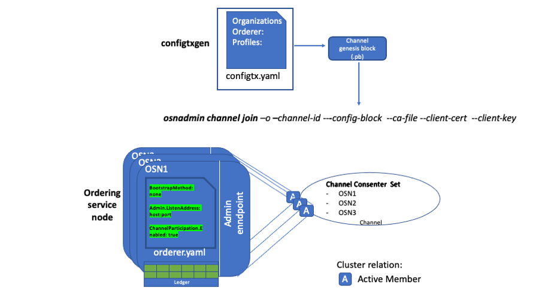
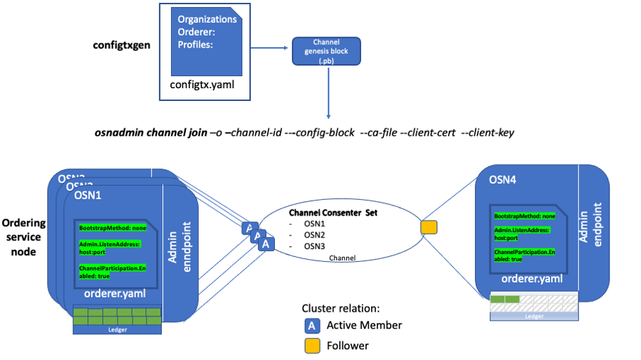

Create a channel¶
To simplify the channel creation process and enhance the privacy and scalability of channels, it is now possible to create application channels (where transactions involving assets happen) without first creating a “system channel” managed by the ordering service. Use this tutorial to learn how to create new channels without a system channel by using the configtxgen tool to create a genesis block and the osnadmin CLI (which runs against a REST API exposed by each ordering service node) to join ordering nodes to a channel. This process allows ordering nodes to join (or leave) any number of channels as needed, similar to how peers can participate in multiple channels.
How this process differs from the legacy Fabric v2.2 process:
- System channel no longer required: Besides the creation of the system channel representing an extra step (as compared to the new process), this system channel created an extra layer of administration that, for some use cases, provided no tangible benefit.
- Consortium no longer required: You no longer need to define the set of organizations, known as the “consortium”, who are permitted to create channels on a particular ordering service. With this new process, all channels are application channels, so the concept of a list of organizations who can create channels no longer applies. Any set of organizations can get together and create a channel using a defined set of ordering nodes (which become the ordering service of that channel).
- Simplified ordering node creation process: Because a system channel genesis block no longer needs to exist before an ordering node is created, admins can now focus on the process of setting up their infrastructure and making sure their node is working correctly before joining a particular application channel.
Benefits of the new process:
- Increased privacy: Because all ordering nodes used to be joined to the system channel, every ordering node in a network knew about the existence of every channel on that ordering service, even if the node itself wasn’t a consenter on that channel and therefore wasn’t ordering or storing its blocks. Now, an ordering node only knows about the channels it is joined to.
- Scalability: When there is a large number of ordering nodes on the system channel, starting the node can take a long time as it has to wait for each orderer to replicate the system channel ledger showing it has joined. Additionally, large numbers of nodes on the system channel increases the number of heartbeat messages being sent between nodes. In large system channels with a large number of nodes, this can cause processing issues, even if no application channels have a large number of ordering nodes on it.
- Flexibility: In the past, the scope of the ordering service was defined by the membership of the node in a system channel, and in some of the application channels created from that particular system channel. Now, orderers can join or leave channels as needed, similar to how peers can join any channel its organization is a member of.
- Operational benefits:
- Easy to list the channels that the ordering node is a consenter on.
- Simple process to remove a channel and the blocks associated with that channel.
- Orderer nodes can now track channels as a follower before being added to a channel’s consenter set, allowing them to detect this addition more quickly. Previously, this process could take several minutes, causing ordering node admins to restart their nodes so that the node could detect that it was joined more quickly.
- If the MSP of a peer organization, as listed in the system channel, needs to be changed, the peer organization no longer needs to coordinate with an admin of the system channel to change the MSP.
Note: The new mode of creating channels is incompatible with creating a channel using a system channel. If the system channel exists, the channel join operation is not supported. Similarly, channel join and channel remove cannot be used with a Solo or Kafka ordering service. “Mixed mode” management, where the system channel is to create channels on some ordering nodes and the new process is used to create channels on other ordering nodes is not supported and highly discouraged. You must either transition to the new process or continue to use the system channel process. For information about removing the system channel from an existing ordering service as part of transitioning to the new process, check out Remove the system channel.
While creating the channel, this tutorial will take you through the following steps and concepts:
- Prerequisites
- Step one: Generate the genesis block of the channel
- Step two: Use the
osnadminCLI to add the first orderer to the channel - Step three: Join additional ordering nodes
- Next steps
Note: If you prefer to learn how to create a channel with the test network instead, check out the Create a channel using the test network tutorial.
Folder structure¶
This tutorial uses the following folder structure for the generated orderer organization MSP and orderer certificates, and while it is not mandatory, it is useful when referring to the certificates referenced by the commands.
├── organizations
│ ├── ordererOrganizations
│ │ └── ordererOrg1.example.com
│ │ ├── msp
│ │ │ ├── cacerts
│ │ │ | └── ca-cert.pem
│ │ │ ├── config.yaml
│ │ │ ├── tlscacerts
│ │ │ | └── tls-ca-cert.pem
│ │ └── ordering-service-nodes
│ │ ├── osn1.ordererOrg1.example.com
│ │ │ ├── msp
│ │ │ │ ├── IssuerPublicKey
│ │ │ │ ├── IssuerRevocationPublicKey
│ │ │ │ ├── cacerts
│ │ │ │ │ └── ca-cert.pem
│ │ │ │ ├── config.yaml
│ │ │ │ ├── keystore
│ │ │ │ │ └── key.pem
│ │ │ │ ├── signcerts
│ │ │ │ │ └── cert.pem
│ │ │ │ └── user
│ │ │ └── tls
│ │ │ ├── IssuerPublicKey
│ │ │ ├── IssuerRevocationPublicKey
│ │ │ ├── cacerts
│ │ │ │ └── tls-ca-cert.pem
│ │ │ ├── keystore
│ │ │ │ └── tls-key.pem
│ │ │ ├── signcerts
│ │ │ │ └── cert.pem
│ │ │ └── user
├── admin-client
│ ├── client-tls-cert.pem
│ ├── client-tls-key.pem
│ └── client-tls-ca-cert.pem
There are three sections in the folder structure above to consider:
- Orderer organization MSP: the
organizations/ordererOrganizations/ordererOrg1.example.com/mspfolder contains the orderer organization MSP that includes thecacertsandtlscacertsfolders that you need to create and then copy in the root certificates (ca-cert.pem) for the organization CA and TLS CA respectively. If you are using an intermediate CA, you also need to include the correspondingintermediatecertsandtlsintermediatecertsfolders. - Orderer local MSP: the
organizations/ordererOrganizations/ordererOrg1.example.com/ordering-service-nodes/osn1.ordererOrg1.example.com/mspfolder, also known as the orderer local MSP, contains the enrollment certificate and private key for the ordering serviceosn1node. This folder is automatically generated when you enroll the orderer identity with a Fabric CA for the organization. - TLS certificates: the
organizations/ordererOrganizations/ordererOrg1.example.com/ordering-service-nodes/osn1.ordererOrg1.example.com/tlsfolder contains the TLS certificate and private key for the ordering serviceosn1node as well as the TLS CA root certtls-ca-cert.pem. - Admin client certificates -
admin-client/folder contains the TLS certificates for the admin client that will be issuing theosadmincommands. The connection between the admin client that calls theosnadminCLI and an orderer requires mutual TLS, although it is not required for the network itself. This means the admin client needs to enroll and register with a TLS CA to generate the TLS certificate (client-tls-cert.pem) and private key (client-tls-key.pem) that is provided to theosnadminCLI. You will need to copy those certificates and the client TLS CA root cert (client-tls-ca-cert.pem) into this folder or point to where they exist on your file system. For simplicity of the tutorial, you could use the same TLS CA that the orderer organization uses. On a production network, they would likely be separate TLS CAs.
Certificate names used in this example are for illustration purposes and may not reflect the actual names of the certificates generated by the CA. When you generate the certificates you can rename them accordingly to make it easier to differentiate them.
Important: You need to create the config.yaml file and add it to the organization MSP and local MSP folder for each ordering node. This file enables Node OU support for the MSP, an important feature that allows the MSP’s admin to be identified based on an “admin” OU in an identity’s certificate. Learn more in the Fabric CA documentation.
If you are using a containerized solution for running your network (which for obvious reasons is a popular choice), it is a best practice to mount volumes for the certificate directories external to the container where the node itself is running. This will allow the certificates to be used by an ordering node container, regardless whether the ordering node container goes down, becomes corrupted, or is restarted.
Prerequisites¶
Because osnadmin commands are performed against an ordering node (which executes the actions), at least one orderer needs to exist so that you can join the orderer to the channel. You can attempt this tutorial with your existing ordering service or deploy a new set of ordering nodes. If you decide to use osnadmin commands against orderers in an existing ordering service, the system channel must first be removed from each ordering node before you can create any new channels. Choose whether you want to use your existing ordering service or deploy a new set of orderers:
Use existing ordering service¶
Before you can take advantage of this feature on a deployed ordering service, you need to remove the system channel from each ordering node that is a consenter in your application channels. A “mixed mode” of orderers on a channel, where some nodes are part of a system channel and others are not, is not supported. The osadmin CLI includes both a channel list and a channel remove command to facilitate the process of removing the system channel. If you prefer to deploy a new ordering service instead, skip ahead to Deploy a new ordering service.
Remove the system channel¶
Before attempting these steps ensure that you have upgraded your ordering nodes to Fabric v2.3 or higher.
Modify the
orderer.yamlfor each ordering node to support this feature and restart the node. See the orderer sampleconfig for more information about these required parameters.General.BootstrapMethod- Set this value tonone. Because the system channel is no longer required, theorderer.yamlfile on each orderer needs to be configured withBootstrapMethod: nonewhich means that no bootstrap block is required or used to start up the orderer.Admin.ListenAddress- The orderer admin server address (host and port) that can be used by theosnadmincommand to configure channels on the ordering service. This value should be a uniquehost:portcombination to avoid conflicts.Admin.TLS.Enabled:- Technically this can be set tofalse, but this is not recommended. In general, you should always set this value totrue.Admin.TLS.PrivateKey:- The path to and file name of the orderer private key issued by the TLS CA.Admin.TLS.Certificate:- The path to and file name of the orderer signed certificate issued by the TLS CA.Admin.TLS.ClientAuthRequired:This value must be set totrue. Note that while mutual TLS is required for all operations on the orderer Admin endpoint, the entire network is not required to use Mutual TLS.Admin.TLS.ClientRootCAs:- The path to and file name of the admin client TLS CA Root certificate. In the folder structure above, this isadmin-client/client-tls-ca-cert.pem.ChannelParticipation.Enabled:- Set this value totrueto enable this feature on the orderer.
Restart each ordering node.
Put the system channel into maintenance mode using the same process for the Kafka to Raft migration. This action stops new channel creation transactions from coming in.
Remove the system channel from the set of orderers, one by one. During the system channel removal from an orderer, the orderer stops servicing all other application channels it is a member of until removal is complete. Therefore, care must be taken to ensure that the remaining orderers can still function and reach consensus. This operation can be staggered, such that depending on the fault tolerance setup of the respective channels, no channel down time is experienced. If an application channel can tolerate one server offline, you should still be able to submit transactions to the channel, via the other orderers that are not undergoing the removal at that time. Use the
osnadmin channel listcommand to view the channels that this orderer is a member of:export OSN_TLS_CA_ROOT_CERT=../config/organizations/ordererOrganizations/ordererOrg1.example.com/ordering-service-nodes/osn1.ordererOrg1.example.com/tls/cacerts/tls-ca-cert.pem export ADMIN_TLS_SIGN_CERT=../config/admin-client/client-tls-cert.pem export ADMIN_TLS_PRIVATE_KEY=../config/admin-client/client-tls-key.pem osnadmin channel list -o [ORDERER_ADMIN_LISTENADDRESS] --ca-file $OSN_TLS_CA_ROOT_CERT --client-cert $ADMIN_TLS_SIGN_CERT --client-key $ADMIN_TLS_PRIVATE_KEY
Where:
ORDERER_ADMIN_LISTENADDRESScorresponds to theOrderer.Admin.ListenAddressdefined in theorderer.yamlfor this orderer.OSN_TLS_CA_ROOT_CERTwith the path and file name of the orderer organization TLS CA root certificate and intermediate certificate if using an intermediate TLS CA.ADMIN_TLS_SIGN_CERTwith the path and file name of the admin client signed certificate from the TLS CA.ADMIN_TLS_PRIVATE_KEYwith the path and file name of the admin client private key from the TLS CA.
Note: Because the connection between the
osnadminCLI and the orderer requires mutual TLS, you need to pass the--client-certand--client-keyparameters on eachosadmincommand. The--client-certparameter points to the admin client certificate and--client-keyrefers to the admin client private key, both issued by the admin client TLS CA.For example:
osnadmin channel list -o HOST1:7081 --ca-file $TLS_CA_ROOT_CERT --client-cert $OSN_TLS_SIGN_CERT --client-key $OSN_TLS_PRIVATE_KEY
The output of this command looks similar to:
{ "systemChannel": { "name": "syschannel", "url": "/participation/v1/channels/systemchannel" }, "channels":[ { "name": "channel1", "url": "/participation/v1/channels/channel1" } ] }
Now you can run
osnadmin channel removeto remove the system channel from the node configuration:osnadmin channel remove -o [ORDERER_ADMIN_LISTENADDRESS] --channelID syschannel --ca-file $OSN_TLS_CA_ROOT_CERT --client-cert $ADMIN_TLS_SIGN_CERT --client-key $ADMIN_TLS_PRIVATE_KEY
For example:
osnadmin channel remove -o HOST1:7081 --channelID syschannel --ca-file $OSN_TLS_CA_ROOT_CERT --client-cert $ADMIN_TLS_SIGN_CERT --client-key $ADMIN_TLS_PRIVATE_KEY
When successful you see:
Status: 204
And when you rerun the
osnadmin channel listcommand, you can verify that the system channel was removed:osnadmin channel list -o [ORDERER_ADMIN_LISTENADDRESS] --ca-file $OSN_TLS_CA_ROOT_CERT --client-cert $ADMIN_TLS_SIGN_CERT --client-key $ADMIN_TLS_PRIVATE_KEY
Examine the output of the command to verify that the system channel was removed:
{ "systemChannel": null, "channels":[ { "name": "channel1", "url": "/participation/v1/channels/channel1" } ] }
Repeat these commands for each ordering node.
Deploy a new set of orderers¶
Use these steps if you prefer to deploy a new set of orderers to try out this feature. Deploying the orderers is a two-step process:
- Create the ordering organization MSP and generate ordering node certificates
- Configure the orderer.yaml file for each orderer
Create the ordering organization MSP and generate ordering node certificates¶
Before you can deploy an orderer, you need to define the ordering organization MSP definition and generate the TLS and enrollment certificates for each Raft ordering node. To learn how to use a CA to create these identities, check out Registering and enrolling identities with a CA. After completing that process, you should have the enrollment and TLS certificates for each node as well as the orderer organization MSP definition. To keep track of the generated certificates and MSP you can use the folder structure defined in this topic, although it is not mandatory.
Because this tutorial demonstrates the process for creating a channel with three orderers deployed for a single organization, you need to generate enrollment and TLS certificates for each node. Why three orderers? This configuration allows for a majority quorum on the Raft cluster. Namely, when there are three orderers, one at a time can go down for maintenance, while a majority (two of three) is maintained. For more information about the number of nodes you should deploy in production, check out The Ordering Service. For simplicity and learning purposes, you have the ability to deploy a single node ordering service, even though such an ordering service will not be highly available and cannot therefore be considered a “production” deployment.
Configure the orderer.yaml file for each orderer¶
Follow the instructions in the ordering service deployment guide to build an ordering service with three ordering nodes. Note that when you configure the orderer.yaml file for each orderer, you will need to make modifications to the ChannelParticipation and General.BoostrapMethod parameters to leverage this feature.
General.BootstrapMethod- Set this value tonone. Because the system channel is no longer required, theorderer.yamlfile on each orderer needs to be configured withBootstrapMethod: nonewhich means that no bootstrap block is required or used to start up the orderer.Admin.ListenAddress- The orderer admin server address (host and port) that can be used by theosnadmincommand to configure channels on the ordering service. This value should be a uniquehost:portcombination to avoid conflicts.Admin.TLS.Enabled:- Technically this can be set tofalse, but this is not recommended. In general, you should always set this value totrue.Admin.TLS.PrivateKey:- The path to and file name of the orderer private key issued by the TLS CA.Admin.TLS.Certificate:- The path to and file name of the orderer signed certificate issued by the TLS CA.Admin.TLS.ClientAuthRequired:This value must be set totrue. Note that while mutual TLS is required for all operations on the orderer Admin endpoint, the entire network is not required to use Mutual TLS.Admin.TLS.ClientRootCAs:- The path to and file name of the admin client TLS CA Root certificate. In the folder structure above, this isadmin-client/client-tls-ca-cert.pem.ChannelParticipation.Enabled:- Set this value totrueto enable this feature on the orderer.
Start each orderer
If you have not already, set the path to the location of the Fabric binaries on your system:
export PATH=<path to download location>/bin:$PATH
In your terminal window set the
FABRIC_CFG_PATHto point to the location of theorderer.yamlfile, relative to where you are running the Fabric commands from. For example, if you download the binaries, and run the commands from the/bindirectory and theorderer.yamlis under/config, the path would be:export FABRIC_CFG_PATH=../config
You can now start the orderer by running the following command on each ordering node:
orderer start
When the orderer starts successfully, you should see something similar to the following output:
INFO 01d Registrar initializing without a system channel, number of application channels: 0, with 0 consensus.Chain(s) and 0 follower.Chain(s)
INFO 01f Starting orderer:
This action starts the ordering nodes without any channels. Repeat these steps for each orderer. At this point, the three nodes are not communicating with each other until we create a channel in the subsequent steps.
While the ordering node is started, there are no channels on the ordering service yet, we create a channel in the subsequent steps.
Define your peer organizations¶
Because the channel you are creating is meant to be used by two or more peer organizations to transact privately on the network, you need to have at least one peer organization defined to act as the channel administrator who can add other organizations. Technically, the peer nodes themselves do not yet have to be deployed, but you do need to create one or more peer organization MSP definitions and at least one peer organization needs to be provided in the configtx.yaml in the next step. Before proceeding to the next section, follow the steps in the Fabric CA documentation to build your peer organization MSP definition. If the peers have been deployed, you should also include their address in the AnchorPeers: section.
Step one: Generate the genesis block of the channel¶
The process of creating a new channel begins by generating the genesis block for the channel that you will later submit to your orderer in the channel join request. Only one member needs to create the genesis block and it can be shared out of band with the other members on the channel who can inspect it to ensure they agree to the channel configuration and then used by each orderer in the ordering service.
Set up the configtxgen tool¶
While it is possible to build the channel creation transaction file manually, it is easier to use the configtxgen tool to build the block by reading a configtx.yaml file that defines the configuration of your channel.
The configtxgen tool is located in the bin folder of downloaded Fabric binaries.
Before using configtxgen, confirm you have to set the FABRIC_CFG_PATH environment variable to the path of the directory that contains your local copy of the configtx.yaml file, for example:
export FABRIC_CFG_PATH=../config
You can check that you can are able to use the tool by printing the configtxgen help text:
configtxgen --help
The configtx.yaml file¶
The configtx.yaml file specifies the channel configuration of new channels in a format that is both readable and editable and that can be used by configtxgen. The configtxgen tool uses the channel profiles that are defined in configtx.yaml to create the channel configuration and write it to the protobuf format that can be consumed by Fabric.
A sample configtx.yaml file is located in the config folder of the binary alongside images that you downloaded. The file contains the following configuration sections that we need to create our new channel:
- Organizations: The organizations that can become members of your channel. Each organization has a reference to the cryptographic material that is used to build the channel MSP. Exactly which members are part of a channel configuration is defined in the Profiles section below.
- Orderer: Contains the list of ordering nodes that will form the consenter set of the channel.
- Profiles: Each channel profile references information from other sections of the
configtx.yamlfile to build a channel configuration. Every channel that is created must reference a profile, which contains information like the peer organizations and the channel’s set of consenters. An unlimited number of profiles can be listed in theProfilessection. However, each must have a distinctive name (this will not become the name of the channel itself, as that is specified by a flag given when the channel is created).
Refer to the Using configtx.yaml to build a channel configuration tutorial to learn more about this file. However, the following three sections require specific configuration in order to create a channel without a system channel.
Note: Peer organizations are not required when you initially create the channel, but if you know them it is recommended to add them now to the Profiles Organizations: and Applications section to avoid having to update the channel configuration later.
Organizations:¶
Provide the orderer organization MSP and any peer organization MSPs that are known. Also provide the endpoint addresses of each ordering node.
- Organizations.OrdererEndpoints:
For example:
OrdererEndpoints:
- "Host1:7080"
- "Host2:7080"
- "Host3:7080"
Orderer:¶
- Orderer.OrdererType Set this value to
etcdraft. As mentioned before, this process does not work with Solo or Kafka ordering nodes. - Orderer.EtcdRaft.Consenters Provide the list of ordering node addresses, in the form of
host:port, that are considered active members of the consenter set. All orderers that are listed in this section will become active “consenters” on the channel when they join the channel.
For example:
EtcdRaft:
Consenters:
- Host: Host1
Port: 7090
ClientTLSCert: ../config/organizations/ordererOrganizations/ordererOrg1.example.com/ordering-service-nodes/osn1.ordererOrg1.example.com/tls/signcerts/cert.pem
ServerTLSCert: ../config/organizations/ordererOrganizations/ordererOrg1.example.com/ordering-service-nodes/osn1.ordererOrg1.example.com/tls/signcerts/cert.pem
- Host: Host2
Port: 7091
ClientTLSCert: ../config/organizations/ordererOrganizations/ordererOrg1.example.com/ordering-service-nodes/osn2.ordererOrg1.example.com/tls/signcerts/cert.pem
ServerTLSCert: ../config/organizations/ordererOrganizations/ordererOrg1.example.com/ordering-service-nodes/osn2.ordererOrg1.example.com/tls/signcerts/cert.pem
- Host: Host3
Port: 7092
ClientTLSCert: ../config/organizations/ordererOrganizations/ordererOrg1.example.com/ordering-service-nodes/osn3.ordererOrg1.example.com/tls/signcerts/cert.pem
ServerTLSCert: ../config/organizations/ordererOrganizations/ordererOrg1.example.com/ordering-service-nodes/osn3.ordererOrg1.example.com/tls/signcerts/cert.pem
For simplicity, each orderer in this example is using the same TLS certificate for both the server and client, although this is not required.
When the channel configuration block is created, configtxgen reads the paths to the TLS certificates and replaces the paths with the corresponding bytes of the certificates.
Profiles:¶
If you are familiar with the legacy process for creating channels, you will recall that the Profiles: section of the configtx.yaml contained a consortium section under the Orderer: group. This consortium definition, which previously specified the peer organizations allowed to create channels on the ordering service, is no longer required. If this section exists in the profile, you cannot use this feature to create a channel. Rather, under the Orderer: section you simply include MSP ID of the ordering organization or organizations in the case of a multi-organization ordering service and list the peer organizations in Application: section that will be members of the channel. At least one orderer organization and one peer organization must be provided.
The following snippet is an example of a channel profile that contains an orderer configuration based on the default channel, orderer, organization, and policy configurations. The Application: section, where the peer organizations are listed, includes the default Application settings as well as at least one peer organization (SampleOrg, in this example) and the corresponding policies for the channel.
Profiles:
SampleAppChannelEtcdRaft:
<<: *ChannelDefaults
Orderer:
<<: *OrdererDefaults
OrdererType: etcdraft
Organizations:
- <<: *SampleOrg
Policies:
<<: *SampleOrgPolicies
Admins:
Type: Signature
Rule: "OR('SampleOrg.member')"
Application:
<<: *ApplicationDefaults
Organizations:
- <<: *SampleOrg
Policies:
<<: *SampleOrgPolicies
Admins:
Type: Signature
Rule: "OR('SampleOrg.member')"
Note: For simplicity, this snippet assumes that the peers and orderers belong to the same organization SampleOrg. You can refer to the sample config for the full example. For a production deployment however, it is recommended that the peer and ordering nodes belong to separate organizations which is why this tutorial uses ordererOrg1.example.com for the orderer organization. If you are doing the same, throughout the configtx.yaml you would need to change all references of the orderer organization from SampleOrg to ordererOrg1.example.com. This would include adding a new orderer organization ordererOrg1.example.com to the Organizations: section of the file.
An unlimited number of profiles can be listed in the Profiles section according to the needs of your use cases. However, each must have a distinctive name (this will not become the name of the channel itself, as that is specified by a flag given when the channel is created). In the next step, you specify which profile to use when you generate the channel genesis block.
Generate the genesis block¶
After you have completed editing the configtx.yaml, you can use it to create a new channel for the peer organizations. Every channel configuration starts with a genesis block. Because we previously set the environment variables for the configtxgen tool, you can run the following command to build the genesis block for channel1 using the SampleAppChannelEtcdRaft profile:
configtxgen -profile SampleAppGenesisEtcdRaft -outputBlock genesis_block.pb -channelID channel1
Where:
-profile- Is the name of the profile inconfigtx.yamlthat will be used to create the channel.-outputBlock- Is the location of where to store the generated configuration block file.-channelID- Is the name of the channel being created. Channel names must be all lower case, less than 250 characters long and match the regular expression[a-z][a-z0-9.-]*. The command uses the-profileflag to reference theSampleAppGenesisEtcdRaft:profile fromconfigtx.yaml.
When the command is successful, you will see logs of configtxgen loading the configtx.yaml file and printing a channel creation transaction:
INFO 001 Loading configuration
INFO 002 orderer type: etcdraft
INFO 003 Loaded configuration: /fabric/config/configtx.yaml
INFO 004 Generating genesis block
INFO 005 Writing genesis block
Step two: Use the osnadmin CLI to add the first orderer to the channel¶
Now that the genesis block has been created, the first ordering node that receives the osnadmin channel join command command effectively “activates” the channel, though the channel is not fully operational until a quorum of consenters is established (if your profile listed three consenters, at least one more node, for a total of two, would have to join using the osnadmin channel join command).
Note: If you try to run the osnadmin commands (aside from the channel list command) against an ordering node that is a member of a system channel, you get an error which indicates that the system channel still exists. The system channel needs to be removed before the osnadmin commands can be used to create or join channels.
Each orderer needs to run the following command:
export OSN_TLS_CA_ROOT_CERT=../config/organizations/ordererOrganizations/ordererOrg1.example.com/ordering-service-nodes/osn1.ordererOrg1.example.com/tls/cacerts/tls-ca-cert.pem
export ADMIN_TLS_SIGN_CERT=../config/admin-client/client-tls-cert.pem
export ADMIN_TLS_PRIVATE_KEY=../config/admin-client/client-tls-key.pem
osnadmin channel join --channelID [CHANNEL_NAME] --config-block [CHANNEL_CONFIG_BLOCK] -o [ORDERER_ADMIN_LISTENADDRESS] --ca-file $OSN_TLS_CA_ROOT_CERT --client-cert $ADMIN_TLS_SIGN_CERT --client-key $ADMIN_TLS_PRIVATE_KEY
Replace:
CHANNEL_NAMEwith the name you want to call this channel.CHANNEL_CONFIG_BLOCKwith the path and file name of the genesis block you created in Step one if you are creating the channel. Each subsequent ordering node can join the configuration starting with the genesis block, or they can join by providing the latest config block instead.ORDERER_ADMIN_LISTENADDRESScorresponds to theOrderer.Admin.ListenAddressdefined in theorderer.yamlfor this orderer.OSN_TLS_CA_ROOT_CERTwith the path and file name of the orderer organization TLS CA root certificate and intermediate certificate if using an intermediate TLS CA.ADMIN_TLS_SIGN_CERTwith the path and file name of the admin client signed certificate from the TLS CA.ADMIN_TLS_PRIVATE_KEYwith the path and file name of the admin client private key from the TLS CA.
For example:
osnadmin channel join --channelID channel1 --config-block genesis_block.pb -o OSN1.example.com:7050 --ca-file $OSN_TLS_CA_ROOT_CERT --client-cert $ADMIN_TLS_SIGN_CERT --client-key $ADMIN_TLS_PRIVATE_KEY
Note: Because the connection between the osnadmin CLI and the orderer requires mutual TLS, you need to pass the --client-cert and --client-key parameters on each osadmin command. The --client-cert parameter points to the admin client certificate and --client-key refers to the admin client private key, both issued by the admin client TLS CA.
The output of this command looks similar to:
{
"name": "channel1",
"url": "participation/v1/channels/channel1",
"consensusRelation": "consenter",
"status": "active",
"height": 1
}
When successful, the orderer is joined to the channel with ledger height 1. Because this orderer is joining from the genesis block, the status is “active”. And because the orderer is part of the channel’s consenter set, its consensusRelation is “consenter”. We delve more into the consensusRelation value in the next section.
You can repeat the same command on the other two orderers. Remember to update the orderer endpoint, -o [ORDERER_ADMIN_LISTENADDRESS], on the command for the corresponding orderer. Because these two orderers join the channel from the genesis block and are part of the consenter set, their status transitions almost immediately from “onboarding” to “active” and the “consensusRelation” status is “consenter”. At this point, the channel becomes operational because a majority of consenters (as defined in the channel configuration) are “active”. You should see something similar to the following in your orderer logs:
INFO 087 raft.node: 1 elected leader 1 at term 2 channel=channel1 node=1
INFO 088 Raft leader changed: 0 -> 1 channel=channel1 node=1
INFO 089 Start accepting requests as Raft leader at block [0] channel=channel1 node=1
After the first orderer is added to the channel, subsequent nodes can join from either the genesis block or from the latest config block. When an orderer joins from a config block, its status is always “onboarding” while its ledger catches up to the config block that was specified in the join command, after which the status is automatically updated to “active”.
Use the osnadmin channel list command with the --channelID flag to view the detailed status and consensusRelation of any channel on any ordering node:
osnadmin channel list --channelID [CHANNEL_NAME] -o [ORDERER_ADMIN_LISTENADDRESS] --ca-file $OSN_TLS_CA_ROOT_CERT --client-cert $ADMIN_TLS_SIGN_CERT --client-key $ADMIN_TLS_PRIVATE_KEY
For example:
osnadmin channel list --channelID channel1 -o HOST2:7081 --ca-file $OSN_TLS_CA_ROOT_CERT --client-cert $ADMIN_TLS_SIGN_CERT --client-key $ADMIN_TLS_PRIVATE_KEY
Replace:
CHANNEL_NAMEwith the name of the channel specified in theconfigtxgencommand when you generated the channel.ORDERER_ADMIN_LISTENADDRESSwith Orderer.Admin.ListenAddress defined in the orderer.yaml for this orderer.OSN_TLS_CA_ROOT_CERTwith the path and file name of the orderer organization TLS CA root certificate and intermediate certificate if using an intermediate TLS CA.ADMIN_TLS_SIGN_CERTwith the path and file name of the admin client signed certificate from the TLS CA.ADMIN_TLS_PRIVATE_KEYwith the path and file name of the admin client private key from the TLS CA.
The output of this command looks similar to:
{
"name": "channel1",
"url": "participation/v1/channels/channel1",
"consensusRelation": "consenter",
"status": "active",
"height": 1
}
The following diagram summarizes the steps you have completed:
 You used the configtxgen command to create the channel genesis block and provided that file when you ran the osnadmin channel join command for each orderer by targeting the admin endpoint on each node.
Assuming you have successfully run the osnadmin channel join on all three ordering nodes, you now have an active channel and the ordering service is ready to order transactions into blocks. Peers can join the channel and clients can begin to transact.
If you want to join additional ordering nodes to the consenter set of the channel, following the instructions in the next section.
Step three: Join additional ordering nodes¶
Over time it may be necessary to add additional ordering nodes to the consenter set of a channel. Other organizations may want to contribute their own orderers to the cluster, or it might prove advantageous under production conditions to permit multiple orderers to go down for maintenance at the same time.
Anytime a new orderer joins the cluster, you need to ensure that you do not lose quorum while the ledger on the new orderer catches up. Adding a fourth orderer to an existing three node cluster changes the majority from two to three. Therefore, during the catch-up process and until the new orderer starts executing consensus, the cluster is in a state of reduced fault tolerance. To account for this situation and avoid any downtime, a command that can ascertain the consensusRelation status of an orderer, which can be either “consenter” or “follower”, has been introduced. When a node joins as a follower, the channel ledger is replicated from other orderers, but as it does not take part in consensus, channel operations are not impacted. Because replicating a long chain of blocks could take a long time, joining as a follower is most useful for channels with high block heights because it allows you to confirm that an orderer is able to replicate blocks before having it count towards quorum. To join an orderer to a channel as a follower, do not include the node in the channel configuration consenter set.
To simplify the tutorial, we assume this additional orderer is part of the same organization as the previous three orderers and the orderer organization is already part of the channel configuration. If the organization of the new orderer is not already part of the channel configuration, a channel configuration update that adds the organization must be submitted (and signed by a set of signatures that satisfies the orderer group’s admins policy) before the new orderer can begin pulling blocks. An orderer can pull blocks from other cluster members if its owning organization is defined in the channel configuration, and its orderer signature satisfies the /Channel/Readers policy.
For this tutorial, the new orderer is not part of the consenter set. Run the following command to join the new orderer to the channel:
osnadmin channel join --channelID [CHANNEL_NAME] --config-block [CHANNEL_CONFIG_BLOCK] -o [ORDERER_ADMIN_LISTENADDRESS] --ca-file $OSN_TLS_CA_ROOT_CERT --client-cert $ADMIN_TLS_SIGN_CERT --client-key $ADMIN_TLS_PRIVATE_KEY
An orderer can join the channel by providing the genesis block, or the latest config block. But the value of consensusRelation will always be “follower” until this orderer is added to the channel’s consenter set, by submitting an update to the channel configuration.
If joining from the genesis block, the output of this command looks similar to:
{
"name": "channel1",
"url": "participation/v1/channels/channel1",
"status": "active",
"consensusRelation": "follower",
"height": 1
}
Otherwise, if joining from the latest config block, the status is onboarding until the channel ledger has caught up to the specified config block. You can issue the same osnadmin channel list command to confirm the status changes to active and the ledger height has caught up. For example, if the total number of blocks on the channel ledger at the specified config block was 1151, after the ledger catches up, the output would look similar to:
{
"name": "channel1",
"url": "participation/v1/channels/channel1",
"status": "active",
"consensusRelation": "follower",
"height": 1151
}
However, it is important to note that the transition from onboarding to active should not be the only criteria used to decide whether it is the right time to add the new orderer to the channel’s consenters set. What is more important is the height that the new orderer reached, compared to the height of the consenters. For example, the specified config block may be at height 1151, but there could be a huge number of normal blocks that follow. After OSN4 becomes active (caught up to the specified config), it is better to compare the height of OSN1 with that of OSN4, and if they are close enough to each other – only then add OSN4 to the consenters set of the channel.
As a reminder, to pull the blocks to the channel ledger, even as a follower, this new orderer must belong to an organization that is part of the current channel configuration. Otherwise, it is unable to replicate any blocks to its ledger. Also, notice the consensusRelation status is still follower because the node is not part of the channel’s consenter set.
The diagram shows the new ordering node that has been added as a follower:
 OSN4 is added to the channel as a follower. Its status is “onboarding” while its ledger catches up to the config block provided on the osnadmin channel join command.
Although the orderer status transitions from onboarding to active, it is still unable to participate in the ordering service because its consensusRelation status is follower, but it will continue to pull blocks and stay current with the ledger. After the status becomes active and you are ready for the orderer to transition from a follower to a consenter, any orderer organization admin can add the orderer to the consenter set on the channel by submitting a channel configuration update transaction, or by using the fabric-config library.
Note: you should never attempt any configuration changes to the Raft consenters, such as adding a consenter, unless all consenters are online and healthy, as you risk losing quorum and therefore the ability to process transactions.
Ensure that the orderer organization has write privileges in the channel configuration so the orderer can become a consenter. When the channel update transaction is complete, you can use the osnadmin channel list command again to confirm that the consensusRelation status for the orderer automatically changes to consenter.
{
"name": "channel1",
"url": "participation/v1/channels/channel1",
"status": "active",
"consensusRelation": "consenter",
"height": 1152
}
Note that if the config block specified on the join command was at a height of 1151, and there were 1000 other blocks after it, then the config block that adds OSN4 as a consenter would be at 2152.
Next steps¶
Join peers to the channel¶
After the channel has been created, you can follow the normal process to join peers to the channel and configure anchor peers. If the peer organization was not originally included in the channel configuration, you need to submit a channel configuration update transaction to add the organization. If it did include the peer organization, then all peer organizations that are members of the channel can fetch the channel genesis block from the ordering service using the peer channel fetch command. The organization can then use the genesis block to join the peer to the channel using the peer channel join command. Once the peer is joined to the channel, the peer will build the blockchain ledger by retrieving the other blocks on the channel from the ordering service.
Add or remove orderers from existing channels¶
You can continue to use the osnadmin channel join and osnadmin channel remove commands to add and remove orderers on each channel according to your business needs. Be aware that before you remove a channel from an orderer, it is recommended that you first remove the orderer from the channel’s consenter set by submitting a channel update request.